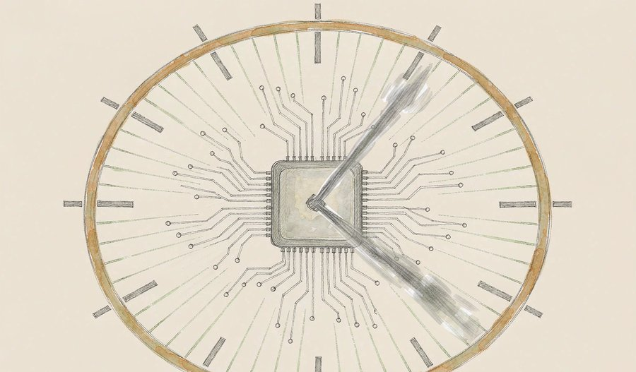
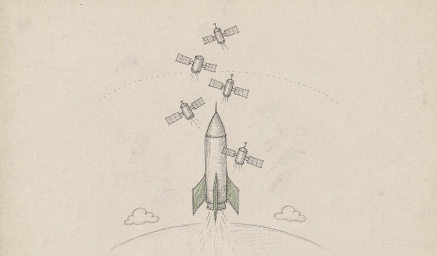
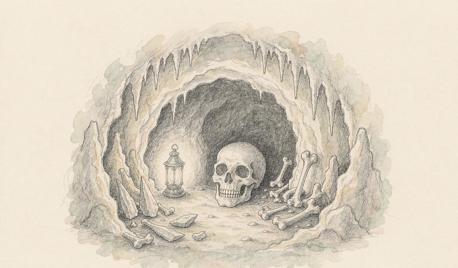
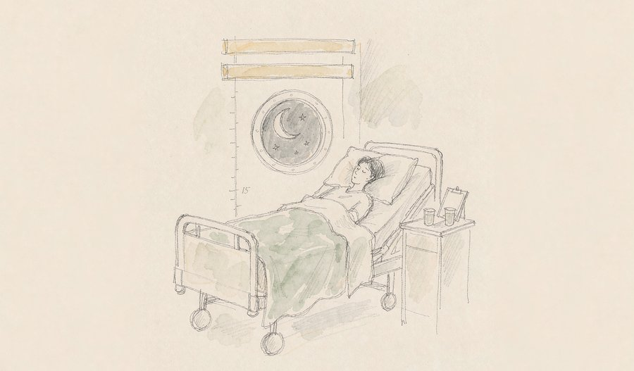
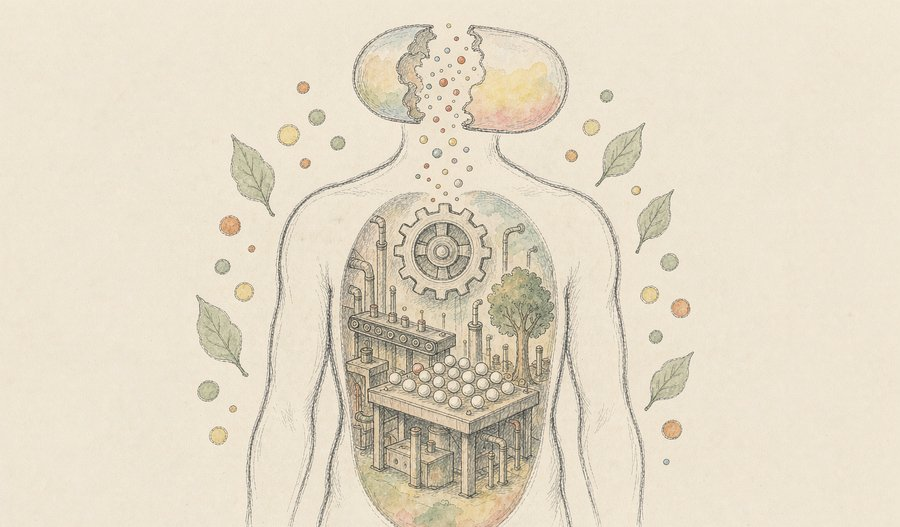
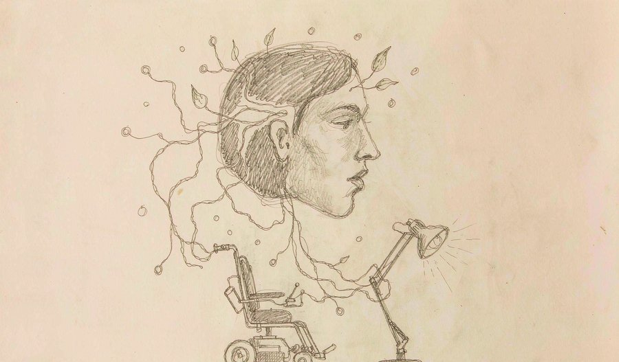
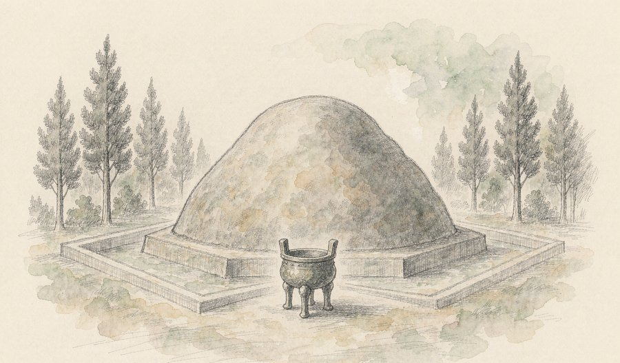
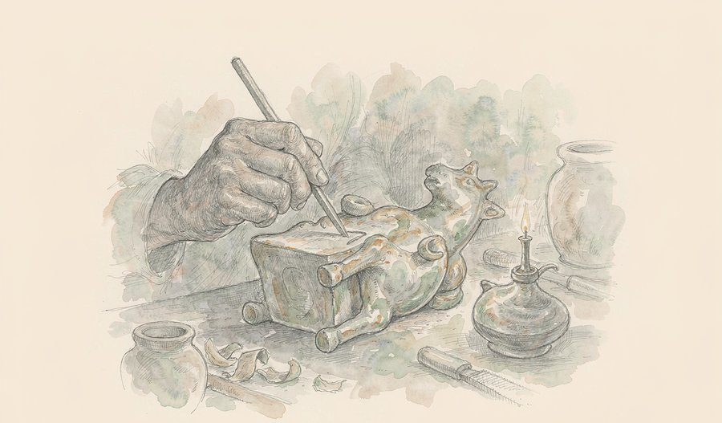

九月的倒数第二个周末，几条消息同时在改写各自的「时间表」。考古队在咸阳原上点清了第四座秦陵的身份，人工智能把芯片交付日期整整拨快了三个季度，而医生们干脆把制药车间搬进了人体。
这三件事看似互不相干，底子里却是同一个词：提前。本该十年后看清的陵寝谱系，本该明年才就绪的算力，本该在工厂里完成的药物生产，都在今天提前落了地。
本期的十条精选，横跨芯片、卫星、溶洞里的古人类、躺出来的登月数据和一位唐朝工匠的随手涂鸦。没有一条是简报，每一条都替你把背景垫平了再讲。
今天最重的一条线是「时间被压缩」。昇腾960提前三个季度就绪、定制药物把十年周期缩到三年、持续半年的卧床实验一次验证两套登月防护方案——不同的领域不约而同地在跟时间赛跑，而跑赢的方式，都是先把方法本身换代。
01

9月19日的华为全联接大会上，华为公布昇腾960DT研发进度较原计划提前三个季度，2027年一季度就绪，单芯片FP8算力达2 PFLOPS、性能较上代翻倍，HBM容量最高288GB。配套的灵衢统一互联总线把十万卡集群的算力利用率从20%提到35%，昇腾970、980将保持一年一代的节奏。
观此：比参数更值得记住的是「提前三个季度」这六个字——研发节奏的确定性，往往比单点峰值更能说明一条产品线的成熟。另一个看点是灵衢架构把矛头从「单芯片多快」转向「十万卡整体浪费多少」：利用率从两成到三成半，等于不换芯片白捡了一半集群。算力竞争正在从晶体管密度升维到系统调度，这是理解未来三年芯片格局的钥匙。
来源：新浪科技
02
阿里通义9月20日上线实时同传模型Qwen3.8-LiveTranslate，用交错式架构重构同传链路，字均延迟从2.8秒缩短到2.3秒，翻译准确度与流畅度同步提升。同日发布的还有面向智能体的多模态模型Qwen3.8-Omni-Flash，能同时听音看视频并自主调用工具完成剪辑、翻译与摘要。
观此：同传的难点从来不是「译得对」，而是「等得起等不起」——人能靠预判半句开口，机器过去只能等整句落定。这次缩短的半秒，本质是让模型学会了「边听边猜」。而当多模态模型开始自己动手剪视频，工具的定义正在变化：它不再等你下指令，而是看完素材直接交活。
来源：SegmentFault
03
9月18日，此芯科技在深圳客户大会发布AGX X2平台，针对边缘推理与智能体场景提供80至300 TOPS端侧算力，支持7B至122B参数大模型原生推理，单Token能耗较行业水平降低50%以上，并可兼容多家国产加速卡做异构拓展。
观此：端侧AI卡脖子的一直是三件事：内存装不下、带宽跑不动、散热压不住。这次用「统一大内存+异构调度」一起解，说明国产芯片设计已经从「堆算力」转向「算能耗账」。智能体时代每家每户都要跑模型，谁让每个词的电费便宜一半，谁就把设备留在了桌面上。
来源：新浪科技
04

9月19日18时50分，长征二号丁火箭在太原以一箭四星方式，将银河航天自主研制的四颗合成孔径雷达卫星送入预定轨道。这批卫星搭载星上智能处理与任务规划载荷，可在轨完成数据筛选与信息提取，银河航天累计发射卫星已达53颗。
观此：传统遥感卫星只当「摄像头」，拍完把海量数据倒回地面慢慢解译；这四颗星把脑子装上了天，在轨道上就筛出有用的部分。回传压力骤降意味着灾害监测的响应速度可以按分钟计。当卫星开始「思考」，太空基础设施的逻辑就从「造得越多」变成「飞得越聪明」。
来源：环球网
05

科研人员在云南省遍福洞确认发现至少三名丹尼索瓦人的化石，包括四枚牙齿、两块头骨碎片和一段臂骨碎片，年代距今约16.7万至13.4万年，同层还出土超过1300件工具与被屠宰的动物遗骸。这是全球第五处丹尼索瓦人化石点，也是最靠南的遗址之一。
观此：丹尼索瓦人曾是个「幽灵物种」——几十年来只靠西伯利亚一小截指骨撑起全部认知。如今化石点一路南下到紧邻缅甸的云南，还带着上千件工具，说明他们不只在南方「路过」，而是在那里生活打猎过日子。远古人类的版图比课本画的要大得多，而且大概率还会继续扩大。
来源：Science News
06

9月19日在天津召开的首届航天医学工程大会上，中国航天员科研训练中心宣布「地星三号」卧床实验全部完成：志愿者头低位6度卧床15或30天，模拟失重生理效应，结果显示防护方案对人体骨肌、心血管系统均能起到良好保护，将支撑空间站一年期驻留与载人登月任务。
观此：「躺平」是地球上模拟失重最便宜也最可控的办法：体液涌向头部、腿骨肌肉闲置，变化轨迹与航天员高度相似。一次实验同时验证空间站与登月两套防护方案，等于把两份答题卡并排写完。载人航天的比拼早就不止火箭——能不能让人在太空里健康地待够久，同样是硬门槛。
来源：新华网
07

上海瑞金医院联合艾博生物9月18日在《细胞》发表首次人体研究：用脂质纳米颗粒把编码CD19×CD3双抗的mRNA送入体内，让身体自行生产这种T细胞衔接器。3例多线治疗失败的难治性免疫性血小板减少症患者，每周给药一次，一个月内全部完全缓解并维持到第六个月，且未出现细胞因子风暴。
观此：传统双抗是工厂造好再输进血管，这次反过来——把「图纸」递进去，让细胞自己开工。达峰更缓、峰值更低，副作用最凶险的一环从源头被压住。3例虽少，但它验证的是一条通用路线：凡是「蛋白质做的药」，未来都可能改成体内自产。
来源：瑞金医院
08

9月18日的张江药谷大会上，阶梯医疗创始人赵郑拓披露：其侵入式脑机接口系统已完成40余例运动功能代偿临床验证，256通道版本进入国家药监局创新器械「绿色通道」，明年进入临床的下一代系统将达4096通道。一位受试者训练两个半月后，上肢功能评分提升25分，远超6分的临床意义线。
观此：通道数决定「读」到多少神经元，而控制水平跟着水涨船高——从操控基础外设到能用意念挂号买药、开轮椅下楼。真正的信号是工程化速度：一年一代的迭代节奏，说明脑机接口正在从实验室手工艺品变成可量产的医疗器械。对瘫痪与中风患者，康复的想象力正被重新定价。
来源：上观新闻
09

9月18日，陕西省考古研究院公布咸阳上召窑秦陵考古成果：这座「亚」字形大墓确认为战国晚期秦王级别陵墓，出土文物258件（组），碳十四测年锁定公元前389年至前208年。结合陵园形制与文献比对，考古人员判断墓主为华阳太后——秦始皇的嫡祖母——的可能性最大。
观此：推理链条比结论更精彩：四条墓道的「亚」字形锁定太后级身份，与2.3公里外「孝文王寿陵」两两毗邻，恰好对上《史记》里华阳太后与孝文王「会葬」的记载。若推测坐实，秦国「王与后分葬独立陵园」的制度创新将提前亮相——它很可能就是秦始皇陵规划的模板。两千二百年前的一场家事安排，就这样改写了一个帝国的葬制。
来源：央广网
10

西安长安区大居安村唐墓（墓主为唐中宗时期户部尚书李承嘉）出土一件陶马踏板，器底刻有12个字——「火树银花合，星桥铁锁开」，节选自苏味道《正月十五夜》。专家推测，这是工匠劳作间隙、恰逢上元时节的随手之作。
观此：这不是碑刻，而是打工人刻在工件底面的「歌词」——诗刚传开没多久，就被一个无名工匠默写在手边，像今天有人在新手机壳上刻歌词。它顺带证明了这首写元宵的诗在当时的「热度」，也证明盛唐的诗歌真长在市井里。同墓还因李承嘉生前站错队而遭「官方毁墓」，一件涂鸦与一段政治清算同穴，历史比剧本跌宕。
来源：中国新闻网
产业的表针在集体拨快。今天科技条线最值得琢磨的不是某个数字，而是「提前」这个词出现的频率：昇腾960提前三个季度就绪，一年一代被写进路线图；同传模型的延迟砍到2.3秒，端侧平台把每个词的电费降一半。这背后是同一种工程哲学——当单点性能逼近极限，竞争就转向节奏与效率。国产算力尤其明显：从「追赶别人的参数」改成「管好自己的迭代表」，这是成熟产业才有的自信。
科学的耐心开始兑现。丹尼索瓦人的故事讲了十几年，从一截指骨到遍布欧亚的化石网络，靠的是一代代田野工作的慢功夫；「地星三号」让志愿者躺满15天、30天，换来的直接写进登月任务的防护方案。这两件事的共同点是：先把基础数据一张张攒齐，突破只是攒够之后的自然结果。卫星在轨自己筛数据，也是同一种能力——把人类的注意力从「看不完」里解放出来。
医学在换一种制造观。mRNA让身体自己生产双抗、脑机接口的通道数以一年一代的速度翻番，这两条线指向同一个判断：治疗正在从「把东西送进人体」转向「让人体参与生产」。前者省掉的是工厂，后者省掉的是漫长的外部康复训练。风险当然还在——暴露曲线能否预测、长期安全性能否跟上——但方向已经清楚。人文线则提醒我们时间刻度的另一端：一座秦陵的论证要等四十年考古积累，一句唐诗的涂鸦沉睡了一千二百年。快与慢各有各的产物，今天恰好都有交代。
如果只记一条，记住咸阳原上的那座「回」字形陵园——它让「秦始皇的祖母华阳太后」从《史记》里的一行字，变成了可以丈量的 83 米封土、200 米墓道和 258 件文物。历史被实物钉住的那一刻，比任何转述都有力量。
今天的精选格局，是「快」与「慢」各占半场：芯片、同传与脑机接口在抢时间，考古与古人类学在用几十年磨一个答案，而医学干脆把两个时间尺度缝合——让身体在几周内学会工厂里十年的活。三条线索殊途同归：无论快慢，能被检验的进步才算数。
内容仅供资讯参考。
本文插画由 AI 辅助绘制。